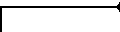
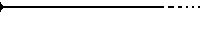
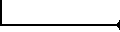
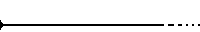

This package allows the estimation of local differential quantities of a surface from a point sample, given either as a mesh or as point cloud.
Note that this package needs the third party libraries Lapack and Blas to be installed to compile the example code.
Consider a sampled smooth surface, and assume we are given a collection of points about a given sample . We aim at estimating the differential properties up to any fixed order of the surface at point from the point set - we denote . More precisely, first order properties correspond to the normal or the tangent plane; second order properties provide the principal curvatures and directions, third order properties provide the directional derivatives of the principal curvatures along the curvature lines, etc. Most of the time, estimating first and second order differential quantities is sufficient. However, some applications involving shape analysis require estimating third and fourth order differential quantities. Many different estimators have been proposed in the vast literature of applied geometry [cgal:p-smrqt-01] (section 3, page 7), and all of them need to define a neighborhood around the point at which the estimation is computed. Our method relies on smooth differential geometry calculations, carried out on smooth objects fitted from the sample points. Datasets amenable to such a processing are naturally unstructured point clouds, as well as meshes - whose topological information may be discarded.
Estimating differential properties from discrete date always raises a philosophical issue. On one hand, estimating differential quantities subsumes a smooth surface does exist. In this spirit one wishes to recover its differential properties, so that any estimation method must come with an asymptotic convergence analysis of the results returned. For the method developed in this CGAL package, the interested will find such an analysis in [cgal:cp-edqpf-05], (Theorem 3) - it should be stressed the error bounds proved therein are optimal.
On the other hand, any estimation method may be applied to arbitrarily data - surface unknown, surface piecewise smooth etc. In such a case, no analysis can be carried out, and it is up to the users to check the results match their needs.
Unlike most of the CGAL packages, this package uses approximation methods and is not intended to provide an exact canonical result in any sense. This is why internal computations are performed with a number type possibly different from that of the input data, even if for convenience the results are returned with this original number type. A reasonable choice for this internal number type is for example the double type.
To present the method, we shall need the following notions. Consider a smooth surface. About one of its points, consider a coordinate system whose -axis does not belong to the tangent space. In such a frame, the surface can locally be written as the graph of a bivariate function. Letting stand for higher order terms, one has :
The degree polynomial is the Taylor expansion of the function , and is called its -jet. Notice that a -jet contains coefficients.
Recall that an umbilical point of a surface - or umbilic for short, is a point where both principal curvatures are identical. At any point of the surface which is not an umbilic, principal directions are well defined, and these (non oriented) directions together with the normal vector define two direct orthonormal frames. If is a unit vector of direction , there exists a unique unit vector so that is direct; and the other possible frame is . Both these coordinate systems are known as the Monge coordinate systems. In both these systems, the surface is said to be given in the Monge form and its jet has the following canonical form :
The coefficients are the principal curvatures, are the directional derivatives of along their respective curvature line, while are the directional derivatives of along the other curvature lines.
The Monge coordinate system can be computed from any -jet (), and so are the Monge coefficients. These informations characterize the local geometry of the surface in a canonical way, and are the quantities returned by our algorithm.
Further details can be found in section 1.4 and in [cgal:cp-edqpf-05] (section 6).
As usual, the fitting procedure may run into (almost) degenerate cases:
The fitting strategy performed by the class Monge_via_jet_fitting requires the following parameters:
As explained in Section 1.1, the output consists of a coordinate system, the Monge basis, together with the Monge coefficients which are stored in the Monge_form class. In addition, more information on the computational issues are stored in the Monge_via_jet_fitting class.
The Monge_form class provides the following information.
In addition, the class Monge_via_jet_fitting stores
This concept provides the types for the input sample points, together with vectors and a number type. It is used as template for the classe Monge_via_jet_fitting<DataKernel, LocalKernel = Cartesian<double>, SvdTraits = lapack_svd> . Typically, one can use CGAL::Cartesian<double>.
Input points of type DataKernel::Point_3 are converted to LocalKernel::Point_3. For output of the Monge_form class, these types are converted back to Data_Kernel ones. Typically, one can use CGAL::Cartesian<double> which is the default.
This concept provides the number, vector and matrix types for algebra operations required by the fitting method in Monge_via_jet_fitting<DataKernel, LocalKernel = Cartesian<double>, SvdTraits = lapack_svd> . The main method is a linear solver using a singular value decomposition.
To solve the fitting problem, the sample points are first converted from the DataKernel to the LocalKernel (this is done using the CGAL::Cartesian_converter). Then change of coordinate systems and linear algebra operations are performed with this kernel. This implies that the number types LocalKernel::FT and SvdTraits::FT must be identical. Second the Monge basis and coefficients, computed with the LocalKernel, are converted back to the DataKernel (this is done using the CGAL::Cartesian_converter and the CGAL::NT_converter).
The first example illustrates the computation of the local differential quantities from a set of points given in a text file as input. The first point of the list is the one at which the computation is performed. The user has to specify a file for the input points and the degrees and .
Figs. 1.1 and 1.2 provide illustrations of principal directions of curvature.
|  | advanced |  |
Input : samples
Output : fitting-basis
Performing a PCA requires diagonalizing a symmetric matrix. This analysis gives an orthonormal basis whose -axis is provided by the eigenvector associated to the smallest eigenvalue.1 Note one may have to swap the orientation of a vector to get a direct basis.
Let us denote the matrix that changes coordinates from the world-basis to the fitting-basis . The rows of are the coordinates of the vectors in the world-basis. This matrix represents a orthogonal transformation hence its inverse is its transpose. To obtain the coordinates of a point in the fitting-basis from the coordinates in the world-basis, one has to multiply by .
As mentioned above, the eigenvalues are returned, from which the sampling quality can be assessed. For a good sampling, the eigenvector associated to the smallest eigenvalue should roughly give the normal direction.
Input : samples, fitting-basis
Output : coefficients
of the bivariate fitted polynomial in the fitting-basis
Computations are done in the fitting-basis and the origin is the point . First, one has to transform coordinates of sample points with a translation () and multiplication by .
The fitting process consists of finding the coefficients of the degree polynomial
Denote the coordinates of the sample points of . For interpolation the linear equations to solve are , and for approximation one has to minimize . The linear algebra formulation of the problem is given by
The equations for interpolation become . For approximation, the system is solved in the least square sense, i.e. one seeks the vector such that argmin.
In any case, there is a preconditioning of the matrix so as to improve the condition number. Assuming the , are of order , the pre-conditioning consists of performing a column scaling by dividing each monomial by - refer to Eq. (1.4.2). Practically, the parameter is chosen as the mean value of the and . In other words, the new system is with the diagonal matrix , so that the solution of the original system is .
There is always a single solution since for under constrained systems we also minimize . The method uses a singular value decomposition of the matrix , where is a orthogonal matrix, is a orthogonal matrix and is a matrix with the singular values on its diagonal. Denote the rank of , we can decompose The number , which is the number of non zero singular values, is strictly lower than if the system is under constrained. In any case, the unique solution which minimize is given by :
One can provide the condition number of the matrix (after preconditioning) which is the ratio of the maximal and the minimal singular values. It is infinite if the system is under constrained, that is the smallest singular value is zero.
Implementation details. We assume a solve function is provided by the traits SvdTraits. This function solves the system MX=B (in the least square sense if M is not square) using a Singular Value Decomposition and gives the condition number of M.
Remark: as an alternative, other methods may be used to solve the
system. A decomposition can be substituted to the . One can
also use the normal equation and apply methods for square
systems such as , or Cholesky since is symmetric
definite positive when has full rank.
The advantages of the
is that it works directly on the rectangular system and gives the
condition number of the system. For more on these alternatives, see
[gl-mc-83] (Chap. 5).
Input : coefficients of the fit ,
fitting-basis
Output : Monge basis wrt fitting-basis and world-basis
In the fitting basis, we have determined a height function expressed by Eq. (1.4.2). Computations are done in the fitting-basis. The partial derivatives, evaluated at , of the fitted polynomial are Expanding Eq. (1.4.2) yields:
Input : coefficients of the fit, Monge basis wrt fitting-basis ()
Output : third and fourth order coefficients of Monge
We use explicit formula. The implicit equation of the fitted polynomial surface in the fitting-basis with origin the point is with
The equation in the Monge basis is obtained by substituting by . Denote this implicit equation. By definition of the Monge basis, we have locally (at )
and the Taylor expansion of at are the Monge coefficients sought. Let us denote the partial derivatives evaluated at the origin of and by and . One has , and , . The partial derivative of order of depends on the matrix and the partial derivatives of order at most of . The third and fourth order coefficients of are computed with the implicit function theorem. For instance :
|  | advanced |  |
| 1 | Another possibility is to choose as z-axis the axis of the world-basis with the least angle with the axis determined with the PCA. Then the change of basis reduces to a permutation of axis. |